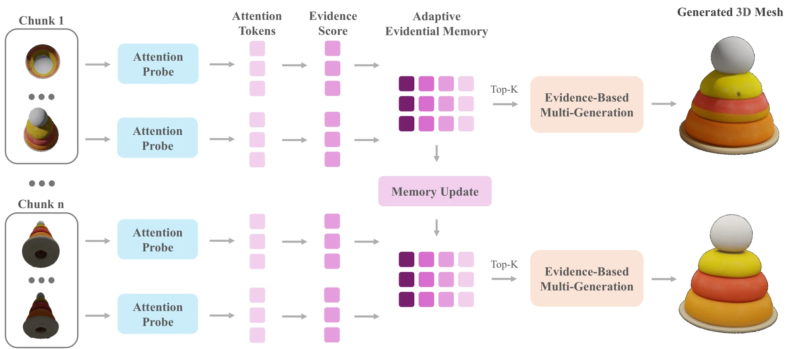
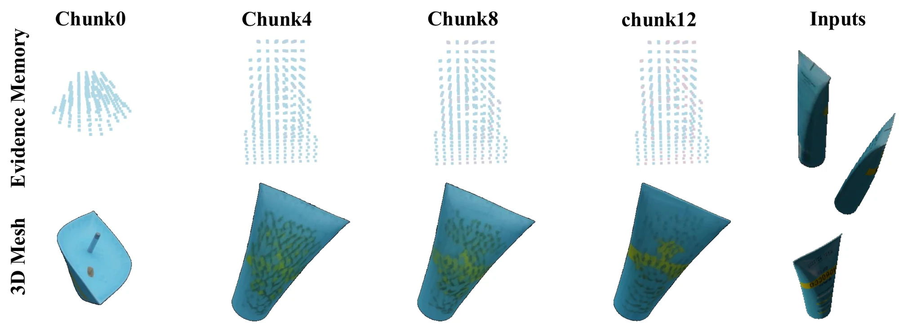

01Probe
Score evidence
Strong and selective cross-attention signals that an incoming view supports a particular 3D token.
Combine attention strength with selectivity.
Sequential Multi-View 3D Generation via Evidential Memory
A training-free wrapper that turns frozen single-view 3D generators into coherent streaming generators with bounded cross-chunk memory.
World Mind Lab, HKUST Media Lab and EECS, MIT Kempner Institute, Harvard University
* Equal contribution † Joint supervision
Stream3D treats streaming 3D generation as an evidence selection problem, not a latent transport problem.
View-conditioned 3D generators create compelling assets from a single image, yet real observations arrive as long monocular streams. Processing every frame independently creates inconsistent geometry and appearance.
Stream3D keeps the underlying generator frozen. A lightweight attention probe scores the evidence contributed by each view, then a compact token-wise memory retains only the most informative historical frames for the next generation step.

Inspect selected real and synthetic streams as rotatable 3D assets. The filmstrip shows views observed across the sequence.
If 3D assets do not load in Chrome, open chrome://settings/system and enable Use graphics acceleration when available.
Stream3D improves appearance and geometry on both GSO and NAVI. Values are taken from the latest paper tables.
| Dataset | Method | CD ↓ | IoU ↑ | PSNR ↑ | LPIPS ↓ |
|---|---|---|---|---|---|
| GSO | SAM3D | 0.094 | 0.664 | 14.178 | 0.178 |
| Stream3D | 0.048 | 0.775 | 16.145 | 0.139 | |
| NAVI | SAM3D | 0.138 | 0.721 | 16.159 | 0.132 |
| Stream3D | 0.128 | 0.741 | 16.474 | 0.123 |
Compare the same input stream with SAM3D and Stream3D. Orbit either model to synchronize the camera across both outputs.
Stream3D stores evidence scores and frame indices, not an ever-growing history of latent activations.
For each query token, two \(Q \times D\) matrices retain the top-\(D\) evidence values and their source frame indices. New views can replace weaker evidence, while frames that never enter any token list are discarded.
The cached evidence at every token and rank is monotonically non-decreasing. This is an evidence-space property, not a claim that every generated sample must improve monotonically.

Probe which views matter, retain the strongest token-wise evidence, then let the frozen generator use the selected bundle.
Strong and selective cross-attention signals that an incoming view supports a particular 3D token.
Combine attention strength with selectivity.
For every token, retain only the strongest evidence scores and the source frames that provided them.
Memory capacity stays fixed across the stream.
Count how often each historical frame is retained, then select the most-supported frames for generation.
Only the selected views condition the frozen generator.
The exact evidence score, fusion rule, and streaming algorithm are detailed in the paper.
Please cite the preprint if Stream3D supports your research.
@article{zhou2026stream3d,
title = {Stream3D: Sequential Multi-View 3D Generation via Evidential Memory},
author = {Zhou, Kaichen and Bai, Zeyang and Chang, Xinhai and
Wang, Mengyu and Liang, Paul and Zhan, Fangneng},
journal = {arXiv preprint arXiv:2605.21472},
year = {2026}
}